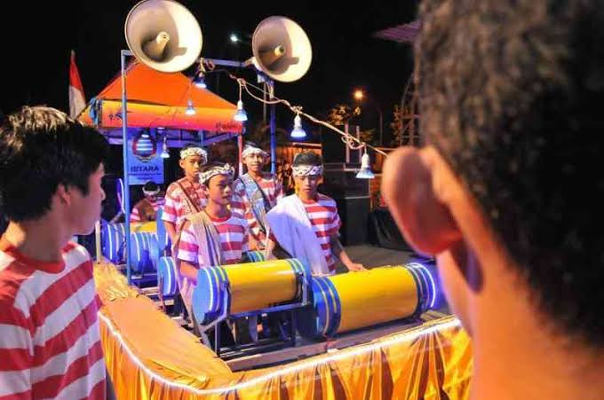

Patrol merupakan alat musik tradisional khas Jember, Jawa Timur, yang memainkan peran penting dalam budaya lokal. Terbuat dari bahan bambu, alat ini menghasilkan suara unik melalui teknik pukulan pada bambu dengan pola tertentu. Musik patrol awalnya dikenal sebagai bagian dari tradisi membangunkan sahur saat Ramadan, namun kini fungsinya berkembang dalam berbagai acara seni dan budaya, seperti festival dan perayaan lokal.